桂南采茶戏
从赣南经粤北传入桂南的采茶小戏，因衬词又称“吁嘟呀”。一人扮茶公、两人扮茶娘，把开荒、采茶、炒茶、卖茶唱成一出生活戏。唱腔用客家话，台下老人也能跟着哼。
桂南采茶戏属“三小戏”，以小生、小旦、小丑为主，也叫“三角班”。唱腔以客家话为主、地老话为辅，锣、鼓、钹、木鱼、唢呐、笛子和二胡一起伴奏。
2006 年列入第一批国家级非物质文化遗产代表性项目名录，申报地区为博白县。
玉林古称鬱林，在广西东南部。山在城边，江从城过，老街与粉店都藏在日常里。
这一页把家乡分成五块：先吃一碗粉，再看一座楼，听一段民俗，然后上山，最后把光景留在相册里。
照片都来自玉林本地实景；票价、开放时间与车程没有核实，就不写进来。
一碗粉可以从早餐吃到夜宵，一块牛巴可以嚼出一下午。玉林的吃食不张扬，却很容易在离开之后被想起。
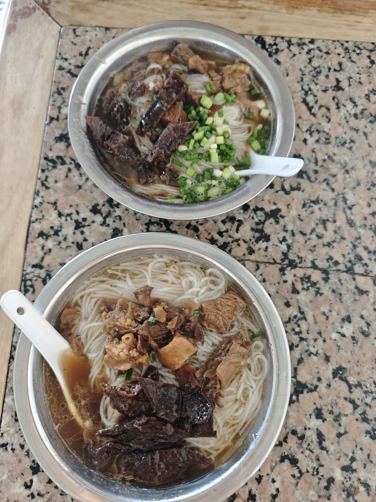
玉林牛腩粉
牛腩与香料久煮成汤，米粉爽滑，出锅前撒一把葱花。
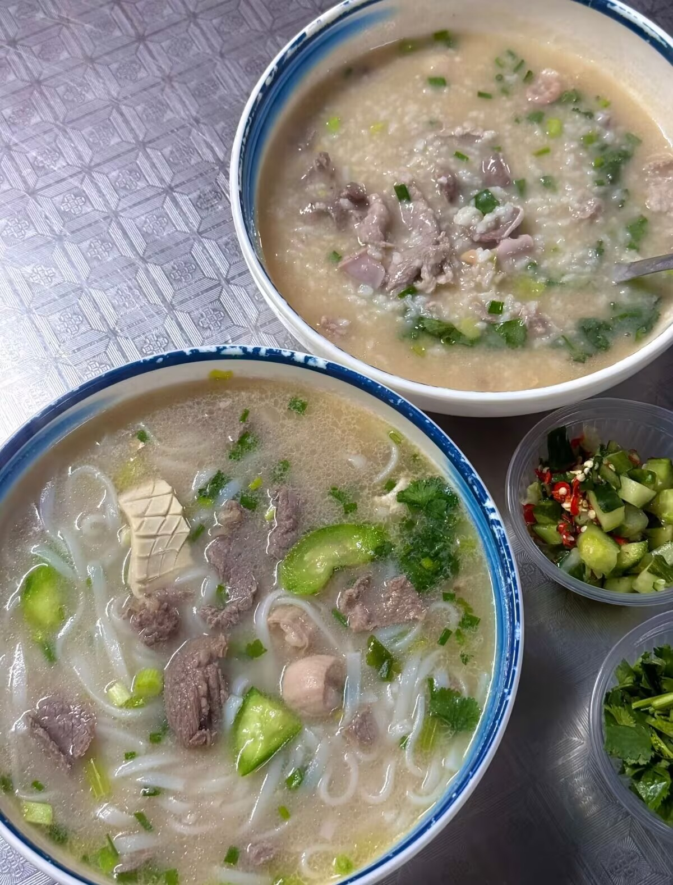
生料粉
现点现煮，猪杂与瘦肉烫至刚熟，汤清味鲜。
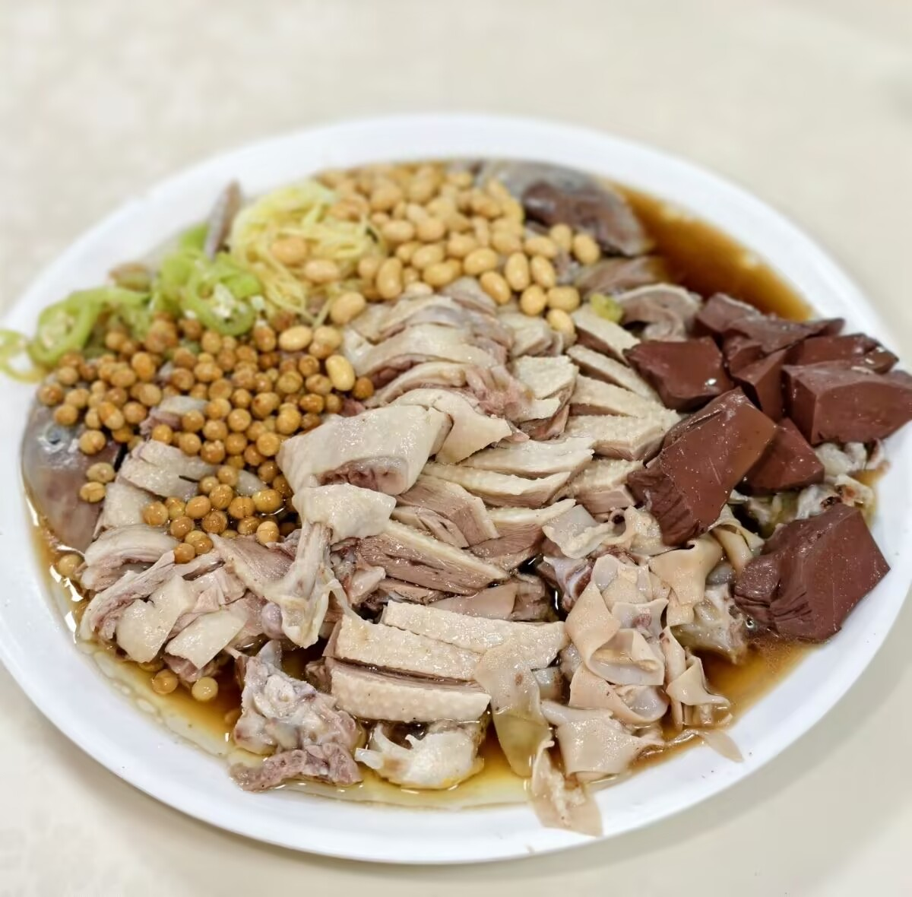
福绵鸭
鸭肉切块，配酸料与黄豆，酸香开胃。
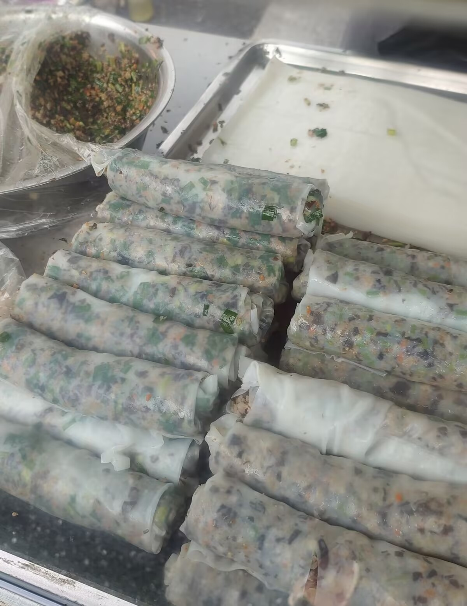
卷馅粉
薄粉皮卷起肉末、木耳与蔬菜，蒸熟后切段。
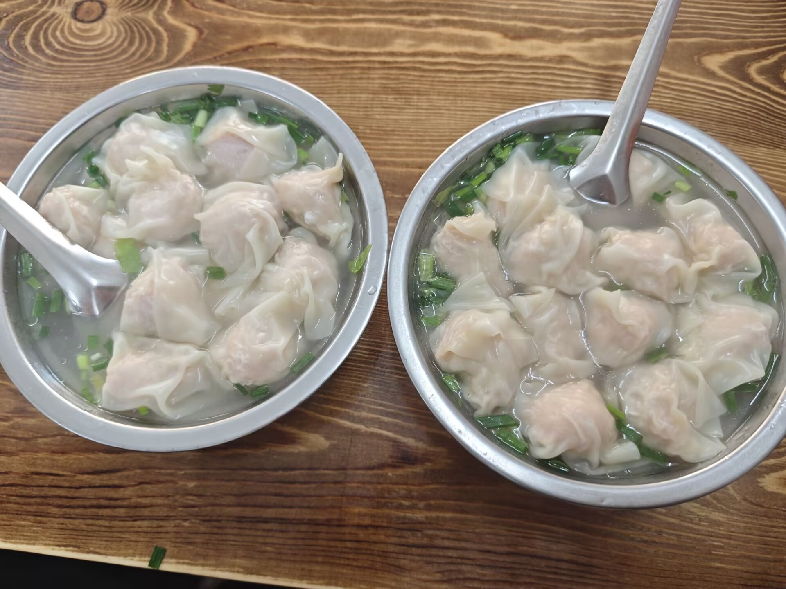
兴业云吞
皮薄馅足，清汤配葱花，是兴业常见的早餐。
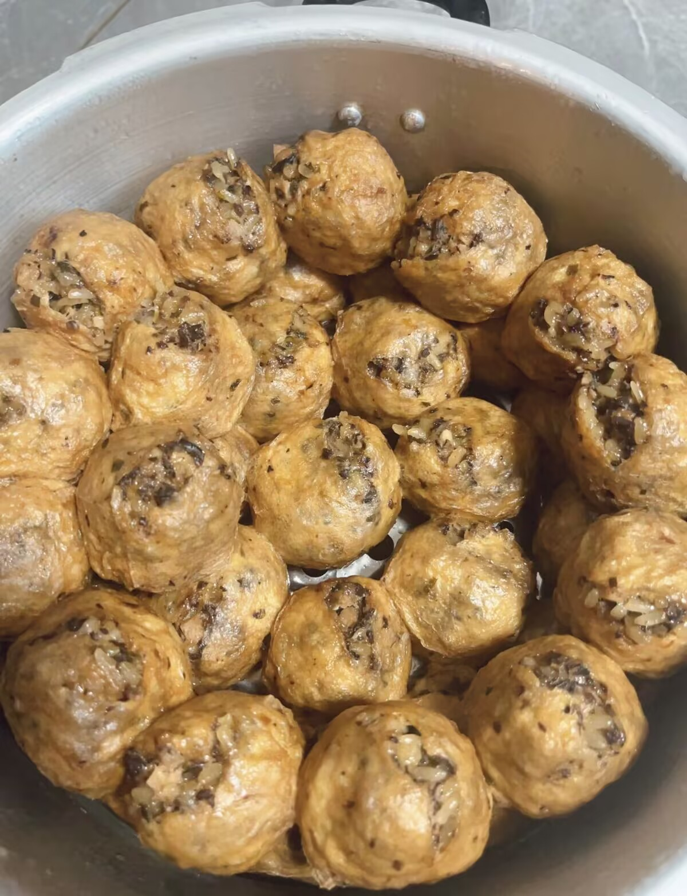
豆腐酿
肉馅酿进油豆腐，焖煮入味，是家常的一道菜。
牛巴取牛肉切片，经腌制、晾晒、油炸和焖制做成。
咸中带甜，酱香浓，越嚼越香；配粉、下酒或当零食都合适。
过去是逢年过节和待客的吃食，现在也是常见的伴手礼。
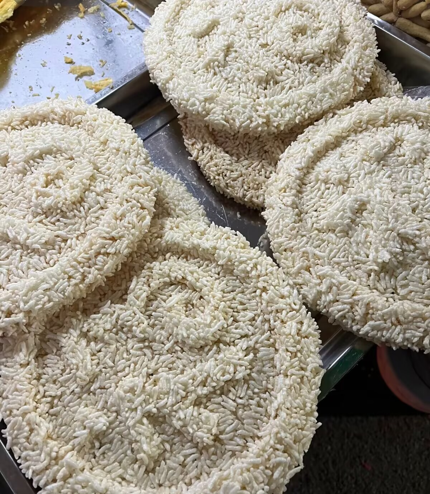
白散是玉林年节常见的米制小吃，糯米压成圆饼后晾干。
下锅油炸，饼身迅速鼓起，入口酥脆，带一点米香。
照片里是炸制前的白散，街市上常能见到晾晒的圆饼。
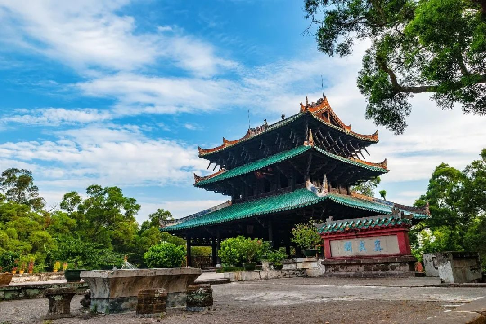
真武阁在容县县城，临绣江而立，始建于明万历元年（1573 年）。
三层檐的纯木楼阁，二层四根内柱离地悬空，靠杠杆结构受力。
1982 年列为全国重点文物保护单位，是岭南木构建筑的代表之一。
看它最好留一点时间，绕着檐角走一圈，再看江面。
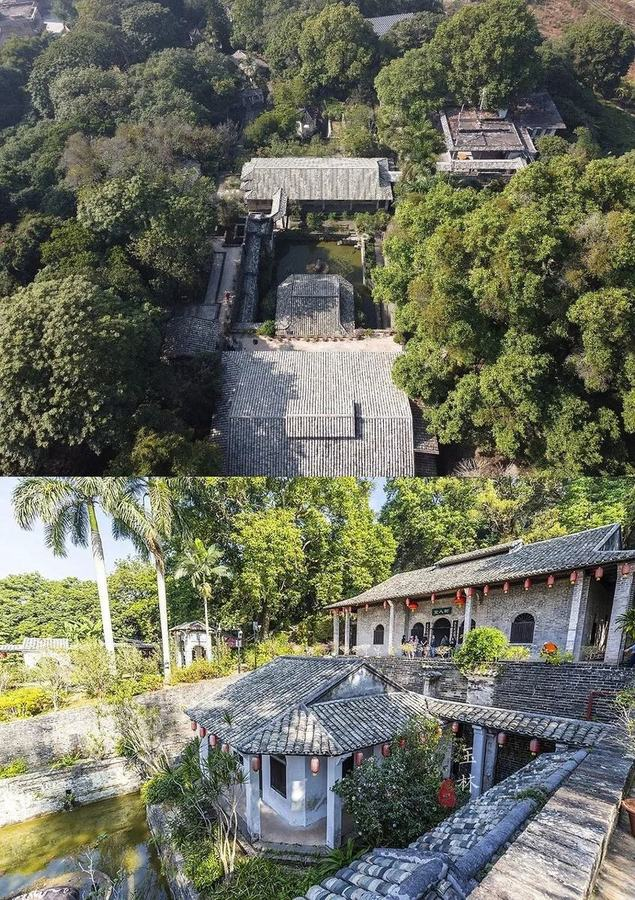
谢鲁山庄在陆川县乌石镇，始建于 1920 年（民国九年）。
这是一处民国时期的私家园林，院落顺着山坡铺开。
廊道、花木与山石连在一起，走路时会不断遇到小景。
2013 年列为第七批全国重点文物保护单位。
云天文化城在玉林城区南流江畔，是一座现代建造的仿古宫殿式建筑群。
主楼 21 层、高约 108 米，以石雕、木雕、铜雕展示为特色。
它不是历史古建，更像玉林城区的一座当代文化地标。
把它当作认识玉林城市面貌的第一站，会比较合适。
听一段乡音，看一门手艺，认识玉林的另一面。
从赣南经粤北传入桂南的采茶小戏，因衬词又称“吁嘟呀”。一人扮茶公、两人扮茶娘，把开荒、采茶、炒茶、卖茶唱成一出生活戏。唱腔用客家话，台下老人也能跟着哼。
桂南采茶戏属“三小戏”，以小生、小旦、小丑为主，也叫“三角班”。唱腔以客家话为主、地老话为辅，锣、鼓、钹、木鱼、唢呐、笛子和二胡一起伴奏。
2006 年列入第一批国家级非物质文化遗产代表性项目名录，申报地区为博白县。
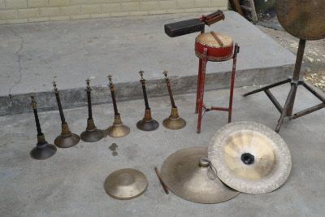
锣、鼓、钹、笛、箫、弦、琴等合奏，曲调明亮，场面热烈。玉林八音在桂南最有代表性，婚娶、祝寿、开业、节庆都常能听到。曲调一起，喜庆的气氛就起来了。
广西八音又称“桂南八音”，主要流布于南宁、玉林、贵港、钦州、梧州、贺州等地。演奏以合奏为主，分坐奏与行奏；玉林一带还有软场、硬场之分。
2011 年以“吹打（广西八音）”列入第三批国家级非物质文化遗产代表性项目名录（扩展项目），申报地区为玉林市。
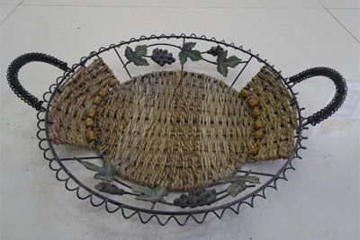
以芒草和竹子为料，经刮青、剖篾、去皮、晾晒，再用交、压、串、绕编成篮、箱、灯。过去外出求学、经商、婚嫁，常带一只“竹手笼”。一件编物往往要用上很久。
博白芒竹编织的工序还包括剥芯、熏晒和防虫防潮处理。传统产品里，手提竹箱“竹手笼”最有代表性，结实耐用。
2014 年列入广西壮族自治区第五批自治区级非物质文化遗产代表性项目名录。
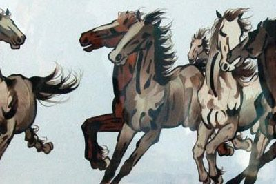
把家禽羽毛洗净、消毒、剪切成形，按国画构图拼贴成花鸟与山水。玉林羽毛画分平贴、半立体两类，远看是画，近看有羽毛的纹理。花鸟、山水都能入画。
玉林羽毛画主要流传在玉林城区，明末清初已有民间艺人制作。制作要经过筛选、洗涤、消毒、杀菌、剪切、防蛀等工序，再借国画构图和木刻、雕塑、装饰手法完成。
片段里有舞狮、巡游、傩面彩绘和竹编等画面，是一段民俗集锦，不是单一项目的专题片。
北流市境内，主峰莲花顶海拔约 1276 米，被称为桂东南第一峰。
高山草甸、云海与山脊上的风车，是它最开阔的部分。
小建议：山上风大、温差明显，带件外套；看云海要碰天气。
点击封面观看玉林介绍视频（约 5 分 40 秒）
在容县，以赤壁丹崖的丹霞山体著称，道书把它列为“三十六洞天”的第二十洞天。
山间留有寺观遗迹，登山步道与观景平台可以慢慢走。
小建议：台阶较多，穿轻便的鞋；夏季注意防晒和补水。
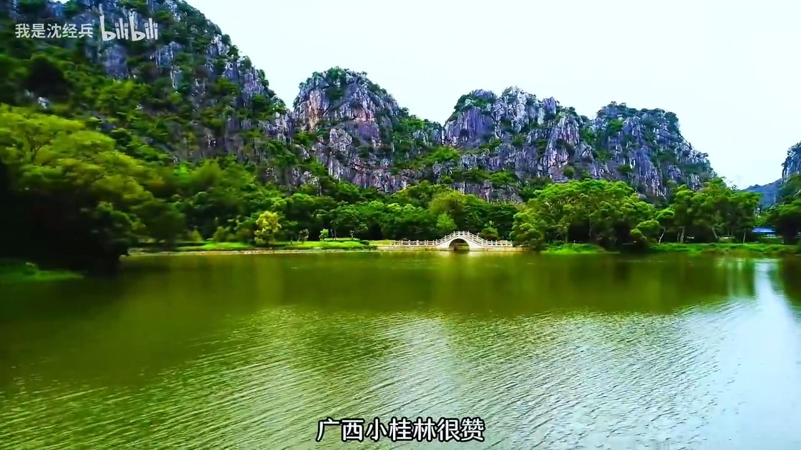
点击封面观看玉林景点介绍视频（约 2 分 08 秒）
从云海到街巷，九张照片，九个在玉林的瞬间。
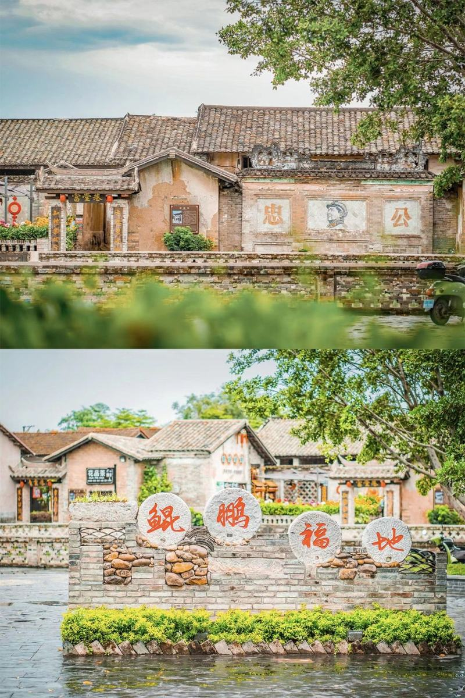
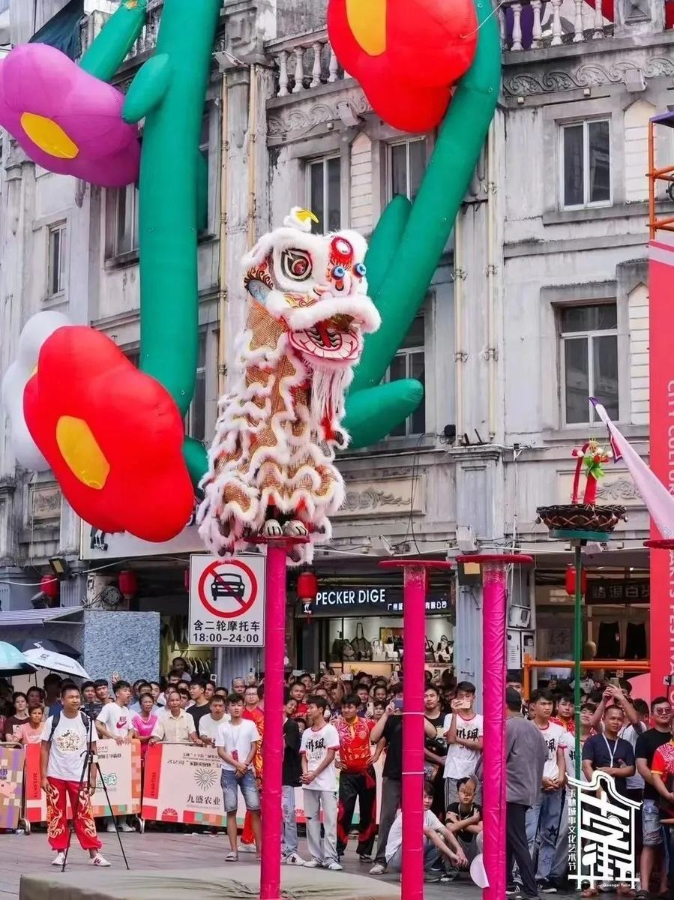
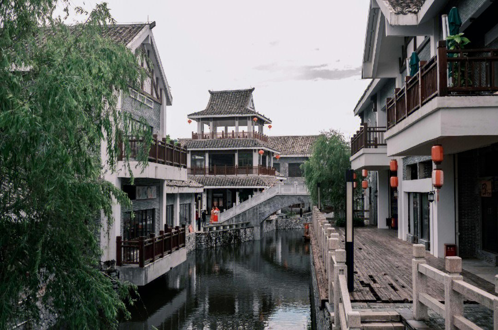
画面从左到右：大容山云海 · 都峤山云海 · 真武阁 · 连理塔 · 鹏垌村 · 骑楼街 · 水街 · 容州古城 · 玉林城区
把鼠标移到照片上，或点按照片，查看地点说明。
电脑：移入或按 Enter；手机：点按。
谢谢你陪我走了一圈
玉林不大，却把山水、旧楼、街巷和一碗热粉都放在了不远的距离里
如果这些画面让你对这座小城多了一点好奇
欢迎到旅人树屋，留下一句话，或者一个出发的日期。